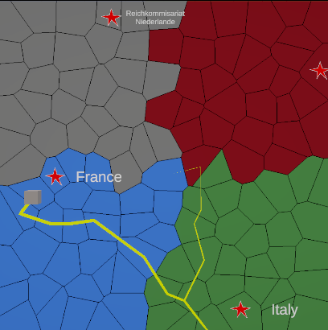

Map Partition
/
Recreation of Hearts of Iron IV
Genre: Tool
Engine: Unity
Platform: PC
Time: 4 weeks
This tool is a recreation of how Paradox especially Hearts of Iron IV handles their maps and how to keep track of "provinces".
The concept works is currently that I randomly place points on a map and use voronoi to make shapes from the points.
I then you give out the a colour id to every shape. Using rgb i can get around 16 million different combinations before I run out.
The colour of a province act as a kind of key which can be used to get information about the "province" or tile.
Such as an owner country or if the unit is allowed to pathfind there.
Inspired by Paradox Interactive' Hearts of Iron IV way of doing map "Provinces".
- Information is limited to "provinces", all they need is the colour of their neighbours and with that value alone all information needed is accessible.
- Raycast on mouse click and the get the returned colour to access "province" information. The entire map is one flat plane but the raycast returns a pixel colour which can be used to select a "province".
- Pathfind with ease on the centroids texture coordinates that correctly cooresponds to world coordinates.
- Layered projected on top of the colour map to display "countries". With countries being colours that can OWN other colours/provinces.
- Conquer using your countrys troops, walk over enemy territory to Conquer their land. Take their capital to get them to capitulate.
- Expandable map content, since the colour is the key then if you change what colour you see you also change what you access. Think Counties->Region->Countries
